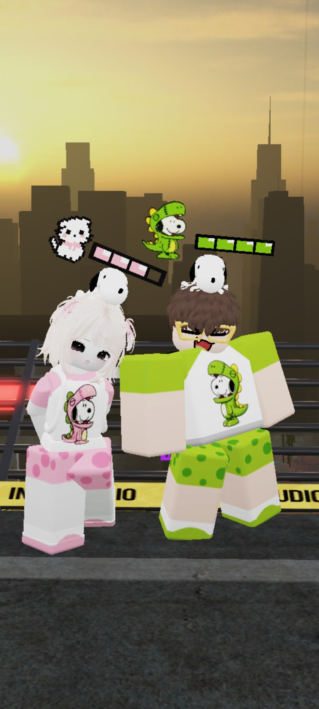
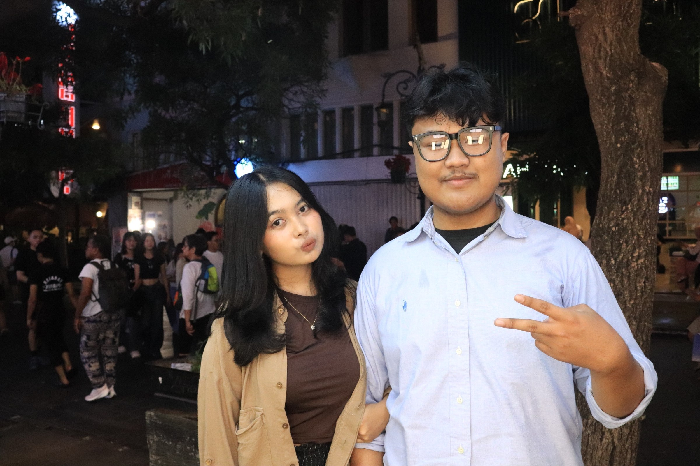
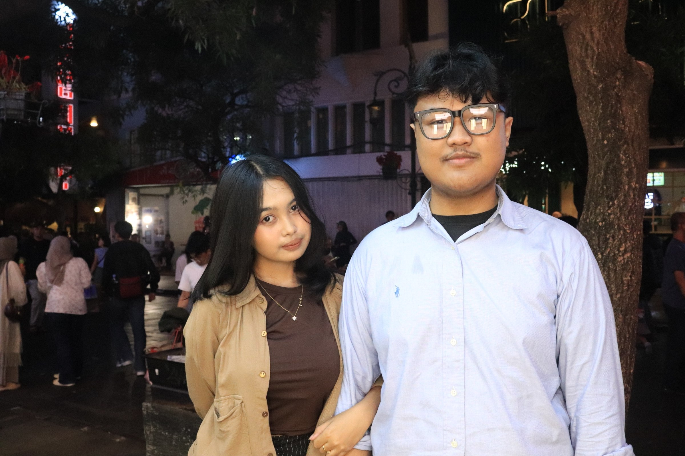

sedikit sesuatu untuk kamu
Hai, Aul.
Mungkin ini bukan sesuatu yang besar, tapi aku bikin ini khusus buat seseorang yang berarti buat aku.
sedikit sesuatu untuk kamu
Mungkin ini bukan sesuatu yang besar, tapi aku bikin ini khusus buat seseorang yang berarti buat aku.
buat kamu, Aul
Aku sebenernya nggak terlalu jago buat ngomongin hal-hal kayak gini secara langsung.
Jadi kali ini Aku coba nyampeinnya lewat sesuatu yang bisa kamu baca pelan-pelan.
Karena hari ini bukan cuma tentang ulang tahun kamu. Tapi tentang bersyukur karena pernah dipertemukan sama seseorang seperti kamu.
beberapa hal kecil
Nggak semua momen harus besar untuk bisa diingat. Kadang justru hal-hal kecil yang akhirnya paling susah dilupain.

01 — awal cerita
Awalnya kita cuma dua orang yang ketemu di sebuah game. Cuma main, ngobrol, dan foto bareng di Roblox. Tapi siapa sangka, dari sesuatu yang sesederhana itu, akhirnya muncul cerita yang sampai sekarang masih aku jalanin.

02 — dari layar ke dunia nyata
Yang awalnya cuma bisa aku lihat lewat layar, akhirnya bisa gue temui secara langsung. Rasanya agak lucu kalau inget awalnya kita cuma kenal dari Roblox, terus akhirnya bisa foto bareng di dunia nyata.

03 — sejauh ini
Dari yang awalnya cuma kenal lewat game, sampai akhirnya punya foto bareng di dunia nyata. Banyak hal yang udah kita lewatin, dan aku masih senang karena sampai sekarang ceritanya belum selesai.
buat Aul
10 Desember
Hai, Aul.
Kalau dipikir-pikir, lucu juga ya gimana awal kita bisa ketemu.
Aku masih inget, walaupun bulannya antara Maret atau April dan aku sendiri udah lupa tepatnya kapan wkwkwk. Waktu itu kita ketemu di map Roblox "Hutan Map Voice" .
Awalnya aku cuma iseng manggil kamu. Nggak nyangka ternyata kamu malah nyamperin aku, terus dari situ kita mulai ngobrol dan saling kenalan.
Dari obrolan itu aku baru tahu kalau kamu orang Bandung, punya adek, dan yang paling bikin aku ngakak... nama adek kamu ternyata Akmal juga. Sama kayak aku. Wkwkwk, kebetulan yang aneh banget.
Mungkin dari luar kelihatannya sederhana. Cuma dua orang yang ketemu di game, ngobrol, bercanda, terus makin sering ngobrol.
Tapi ternyata dari situ semuanya mulai.
Salah satu hal yang bikin aku suka sama kamu adalah karena jokes kita nyambung. Kamu orangnya humoris, suka ketawa sama jokes aku, dan entah kenapa ngobrol sama kamu selalu terasa gampang.
Ditambah lagi... kamu cantik, imut, dan lucu. Jadi ya, makin susah buat aku nggak suka sama kamu. Wkwkwk.
Tapi dari semua hal yang aku inget, ada satu momen yang sampai sekarang paling aku inget.
Waktu kita ketemu sebelum aku berangkat ke Bali, dan kamu peluk aku sebelum akhirnya kita harus LDR lagi.
Mungkin buat kamu itu cuma pelukan biasa. Tapi buat aku, itu salah satu momen yang bakal aku simpan lama.
Dan sekarang, di hari ulang tahun kamu, aku cuma mau bilang:
Makasih udah nemenin aku selama ini.
Makasih udah nerima aku apa adanya. Makasih karena masih bertahan sama hubungan ini sampai sekarang.
Aku tahu perjalanan kita nggak selalu gampang, tapi aku senang karena sampai hari ini kita masih punya cerita buat dilanjutin.
Selamat ulang tahun, Aul.
Semoga di umur yang baru ini banyak hal baik datang ke hidup kamu. Semoga kamu selalu punya alasan buat senyum, dan semoga semua yang kamu pengen pelan-pelan bisa tercapai.
Dan semoga... cerita yang awalnya cuma dimulai dari Roblox ini masih punya banyak halaman lagi.
I love you. 💙
— Mal
satu hal terakhir
Setelah semua cerita yang tadi kamu baca, ternyata masih ada satu hal kecil yang pengen aku kasih.
"Makasih udah jadi bagian dari cerita aku sampai sejauh ini."
Semoga setelah ini masih ada banyak tempat yang bisa kita datengin, banyak hal yang bisa kita ceritain, dan banyak momen yang bisa kita simpan bareng.
Happy Birthday, Aul. 💙
— Mal